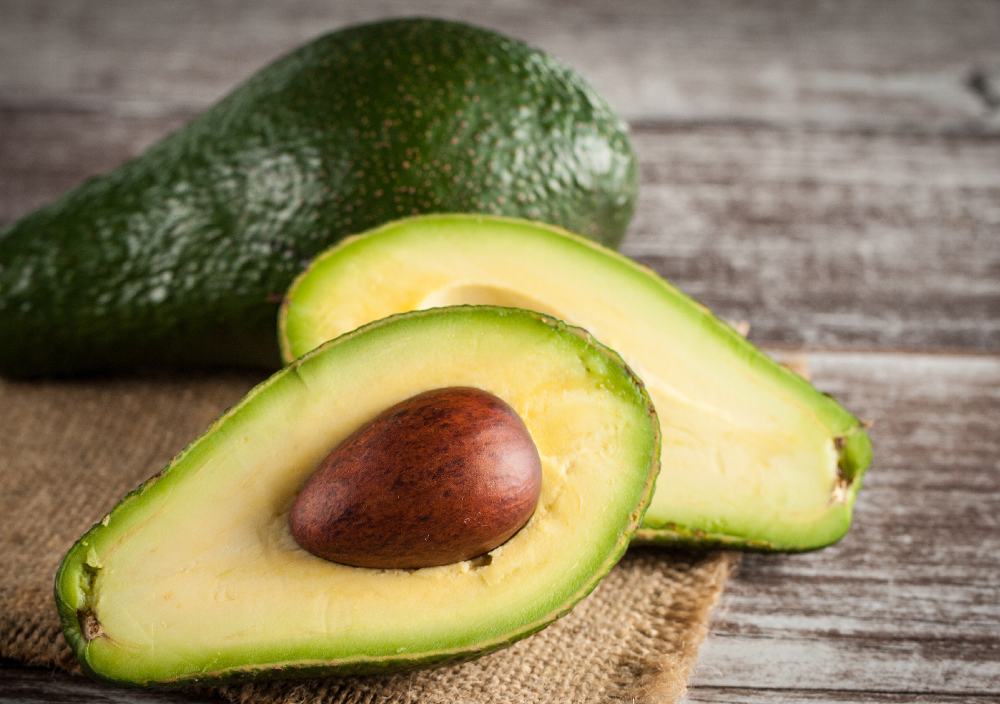

Alpukat
Alpukat atau avokad adalah tumbuhan penghasil buah meja dengan nama sama.
Tumbuhan ini berasal dari Meksiko dan Amerika Tengah dan kini banyak dibudidayakan
di Amerika Selatan dan Amerika Tengah sebagai tanaman perkebunan monokultur dan
sebagai tanaman pekarangan di daerah-daerah tropika lainnya di dunia. Apa Khasiat dari buah alpukat?
Hasil gambar untuk alpukat
Selain serat dan lemak yang baik, buah alpukat juga kaya akan kandungan kaliumnya. Jenis mineral satu ini sangat bermanfaat untuk membantu mengendalikan tekanan darah dan mencegah terjadinya tekanan darah tinggi.